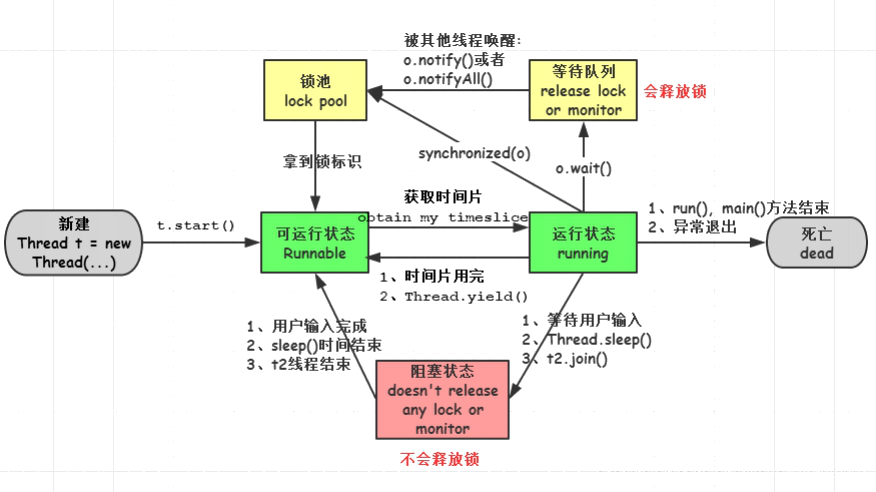

<!DOCTYPE html><html lang="en"><head><meta name="generator" content="Hexo 3.9.0"><meta charset="utf-8"><meta name="keywords" content="个人博客, 松林羊, ysl, songlinsheep, andus, blog, 个人站点, 个人网站"><meta name="description" content="松林羊的个人网站，用于记录，分享。欢迎交流^-^"><meta name="viewport" content="width=device-width,initial-scale=1,maximum-scale=1"><title> Java多线程(一)-基础篇 | 松林羊</title><link rel="shortcut icon" href="/smile.ico"><link rel="stylesheet" href="/css/style.css"><link rel="stylesheet" href="/fancybox/jquery.fancybox.min.css"><script src="/js/pace.min.js"></script><script>!function(e,t,o,c,i,a,n){e.DaoVoiceObject=i,e[i]=e[i]||function(){(e[i].q=e[i].q||[]).push(arguments)},e[i].l=1*new Date,a=t.createElement(o),n=t.getElementsByTagName(o)[0],a.async=1,a.src=c,a.charset="utf-8",n.parentNode.insertBefore(a,n)}(window,document,"script",("https:"==document.location.protocol?"https:":"http:")+"//widget.daovoice.io/widget/0f81ff2f.js","daovoice"),daovoice("init",{app_id:"1559132c"}),daovoice("update")</script></head></html><body><main class="content"><section class="outer"><article id="post-Java多线程-一-基础篇" class="article article-type-post" itemscope itemprop="blogPost" data-scroll-reveal><div class="article-inner"><header class="article-header"><h1 class="article-title" itemprop="name"> Java多线程(一)-基础篇</h1></header><div class="article-meta"> <a href="/2019/11/08/Java多线程-一-基础篇/" class="article-date"><time datetime="2019-11-08T13:55:06.000Z" itemprop="datePublished">2019-11-08</time></a><div class="article-category"> <a class="article-category-link" href="/categories/编程语言/">编程语言</a></div> &emsp;<i class="fe fe-bar-chart"></i> <span class="post-count">2.3k</span>字 &emsp;<i class="fe fe-clock"></i> <span class="post-count">9</span>分钟</div><div class="tocbot"></div><div class="article-entry" itemprop="articleBody"><h1 id="基本概念"><a href="#基本概念" class="headerlink" title="基本概念"></a>基本概念</h1><p><b>线程</b></p><ul><li>程序中单独顺序的控制流</li><li>线程本身依靠程序进行运行</li><li>线程是程序中的顺序控制流，只能用分配给程序的资源和环境</li></ul><p><b>进程</b></p><ul><li>正在执行的程序</li><li>一个进程可以包含一个或多个线程</li><li>至少包含一个线程</li></ul><p><b>单线程</b></p><ul><li>进程中只存在一个线程，实际上主方法就是一个主线程</li></ul><p><b>多线程</b></p><ul><li>一个进程中运行多个线程</li><li>目的：更好的使用CPU资源</li></ul><p><b>并行</b></p><ul><li>真正的同时，多个cpu实例或者多台机器同时执行一段处理逻辑。</li></ul><p><b>并发</b></p><ul><li>通过cpu调度算法，让用户看上去同时执行，实际上从cpu操作层面不是真正的同时。使用TPS或者QPS来反应这个系统的并发处理能力</li></ul><p><b>线程安全</b></p><ul><li>并发的情况之下，该代码经过多线程使用，线程的调度顺序不影响任何结果</li></ul><p><b>同步</b></p><ul><li>保证共享资源的多线程访问成为线程安全</li></ul><p><b>死锁</b></p><ul><li>两个线程或两个以上线程都在等待对方执行完毕才能继续往下执行的时候就发生了死锁</li><li>结果就是这些线程都陷入了无限的等待中</li></ul><h1 id="线程的实现"><a href="#线程的实现" class="headerlink" title="线程的实现"></a>线程的实现</h1><h3 id="继承java-lang-Thread类"><a href="#继承java-lang-Thread类" class="headerlink" title="继承java.lang.Thread类"></a>继承java.lang.Thread类</h3><figure class="highlight java"><table><tr><td class="gutter"><pre><span class="line">1</span><br><span class="line">2</span><br><span class="line">3</span><br><span class="line">4</span><br><span class="line">5</span><br><span class="line">6</span><br><span class="line">7</span><br><span class="line">8</span><br><span class="line">9</span><br><span class="line">10</span><br><span class="line">11</span><br><span class="line">12</span><br><span class="line">13</span><br><span class="line">14</span><br><span class="line">15</span><br><span class="line">16</span><br><span class="line">17</span><br><span class="line">18</span><br><span class="line">19</span><br><span class="line">20</span><br><span class="line">21</span><br><span class="line">22</span><br><span class="line">23</span><br><span class="line">24</span><br><span class="line">25</span><br><span class="line">26</span><br><span class="line">27</span><br><span class="line">28</span><br><span class="line">29</span><br></pre></td><td class="code"><pre><span class="line"><span class="keyword">public</span> <span class="class"><span class="keyword">class</span> <span class="title">MyThread01</span> <span class="keyword">extends</span> <span class="title">Thread</span></span>&#123;</span><br><span class="line">    <span class="comment">// 自定义线程名称</span></span><br><span class="line">    <span class="keyword">private</span> String name;</span><br><span class="line">    <span class="function"><span class="keyword">public</span> <span class="title">MyThread01</span><span class="params">(String name)</span></span>&#123;</span><br><span class="line">        <span class="keyword">this</span>.name = name;</span><br><span class="line">    &#125;</span><br><span class="line"></span><br><span class="line">    <span class="meta">@Override</span></span><br><span class="line">    <span class="function"><span class="keyword">public</span> <span class="keyword">void</span> <span class="title">run</span><span class="params">()</span> </span>&#123;</span><br><span class="line">        <span class="keyword">super</span>.run();</span><br><span class="line">        <span class="keyword">for</span> (<span class="keyword">int</span> i = <span class="number">0</span>; i &lt; <span class="number">1000</span>; i++) &#123;</span><br><span class="line">            System.out.println(name+<span class="string">"："</span>+i);</span><br><span class="line">        &#125;</span><br><span class="line">    &#125;</span><br><span class="line"></span><br><span class="line">    <span class="function"><span class="keyword">public</span> <span class="keyword">static</span> <span class="keyword">void</span> <span class="title">main</span><span class="params">(String[] args)</span> </span>&#123;</span><br><span class="line">        MyThread01 t1 = <span class="keyword">new</span> MyThread01(<span class="string">"A"</span>);</span><br><span class="line">        MyThread01 t2 = <span class="keyword">new</span> MyThread01(<span class="string">"B"</span>);</span><br><span class="line">        <span class="comment">// 此时程序依然是顺序执行</span></span><br><span class="line">        <span class="comment">//t1.run();</span></span><br><span class="line">        <span class="comment">//t2.run();</span></span><br><span class="line"></span><br><span class="line">        <span class="comment">// System.out.println("----------------华丽分割线----------------");</span></span><br><span class="line"></span><br><span class="line">        <span class="comment">// 通过start()方法启动线程，此时t1、t2线程交替执行</span></span><br><span class="line">        t1.start();</span><br><span class="line">        t2.start();</span><br><span class="line">    &#125;</span><br><span class="line">&#125;</span><br></pre></td></tr></table></figure><p><b>结论</b></p><ol><li>线程的启动是通过start()方法。通过对象调用run()方法程序依然是顺序执行。</li><li>t1、t2线程交替执行，也就是并发执行。</li><li>查看Thread类的源码，可以发现Thread类是Runable接口的一个实现类。</li></ol><h3 id="实现Runable接口"><a href="#实现Runable接口" class="headerlink" title="实现Runable接口"></a>实现Runable接口</h3><figure class="highlight java"><table><tr><td class="gutter"><pre><span class="line">1</span><br><span class="line">2</span><br><span class="line">3</span><br><span class="line">4</span><br><span class="line">5</span><br><span class="line">6</span><br><span class="line">7</span><br><span class="line">8</span><br><span class="line">9</span><br><span class="line">10</span><br><span class="line">11</span><br><span class="line">12</span><br><span class="line">13</span><br><span class="line">14</span><br><span class="line">15</span><br><span class="line">16</span><br><span class="line">17</span><br><span class="line">18</span><br><span class="line">19</span><br></pre></td><td class="code"><pre><span class="line"><span class="keyword">public</span> <span class="class"><span class="keyword">class</span> <span class="title">MyRunable02</span> <span class="keyword">implements</span> <span class="title">Runnable</span> </span>&#123;</span><br><span class="line">    <span class="meta">@Override</span></span><br><span class="line">    <span class="function"><span class="keyword">public</span> <span class="keyword">void</span> <span class="title">run</span><span class="params">()</span> </span>&#123;</span><br><span class="line">        <span class="keyword">for</span> (<span class="keyword">int</span> i = <span class="number">0</span>; i &lt; <span class="number">1000</span>; i++) &#123;</span><br><span class="line">            System.out.println(Thread.currentThread().getName()+<span class="string">"："</span>+i);</span><br><span class="line">        &#125;</span><br><span class="line">    &#125;</span><br><span class="line"></span><br><span class="line">    <span class="function"><span class="keyword">public</span> <span class="keyword">static</span> <span class="keyword">void</span> <span class="title">main</span><span class="params">(String[] args)</span> </span>&#123;</span><br><span class="line">        MyRunable02 r1 = <span class="keyword">new</span> MyRunable02();</span><br><span class="line"></span><br><span class="line">        Thread t1 = <span class="keyword">new</span> Thread(r1);</span><br><span class="line">        Thread t2 = <span class="keyword">new</span> Thread(r1);</span><br><span class="line"></span><br><span class="line">        <span class="comment">// 通过start()方法启动线程，此时t1、t2线程交替执行</span></span><br><span class="line">        t1.start();</span><br><span class="line">        t2.start();</span><br><span class="line">    &#125;</span><br><span class="line">&#125;</span><br></pre></td></tr></table></figure><p><b>结论</b>：由上一条第3点结论得出，结论同上。</p><h3 id="实现Callable接口"><a href="#实现Callable接口" class="headerlink" title="实现Callable接口"></a>实现Callable接口</h3><ol><li>这里先简单普及一下，在Java中Runnable的run()方法没有返回值，而Callable接口里的call()方法可返回值。</li><li>Java常用Future接口来代表Callable接口里的call()方法的返回值，并为Future接口提供了一个FutureTask实现类。</li><li>Future类同时实现了Future、Runnable接口。</li></ol><h5 id="并发执行同一个FutureTask"><a href="#并发执行同一个FutureTask" class="headerlink" title="并发执行同一个FutureTask"></a>并发执行同一个FutureTask</h5><figure class="highlight java"><table><tr><td class="gutter"><pre><span class="line">1</span><br><span class="line">2</span><br><span class="line">3</span><br><span class="line">4</span><br><span class="line">5</span><br><span class="line">6</span><br><span class="line">7</span><br><span class="line">8</span><br><span class="line">9</span><br><span class="line">10</span><br><span class="line">11</span><br><span class="line">12</span><br><span class="line">13</span><br><span class="line">14</span><br><span class="line">15</span><br><span class="line">16</span><br><span class="line">17</span><br><span class="line">18</span><br><span class="line">19</span><br><span class="line">20</span><br><span class="line">21</span><br><span class="line">22</span><br><span class="line">23</span><br><span class="line">24</span><br><span class="line">25</span><br><span class="line">26</span><br><span class="line">27</span><br><span class="line">28</span><br><span class="line">29</span><br><span class="line">30</span><br><span class="line">31</span><br><span class="line">32</span><br><span class="line">33</span><br><span class="line">34</span><br><span class="line">35</span><br><span class="line">36</span><br><span class="line">37</span><br><span class="line">38</span><br><span class="line">39</span><br><span class="line">40</span><br><span class="line">41</span><br><span class="line">42</span><br><span class="line">43</span><br><span class="line">44</span><br><span class="line">45</span><br></pre></td><td class="code"><pre><span class="line"><span class="keyword">public</span> <span class="class"><span class="keyword">class</span> <span class="title">MyCallable03</span> <span class="keyword">implements</span> <span class="title">Callable</span>&lt;<span class="title">String</span>&gt; </span>&#123;</span><br><span class="line">    <span class="keyword">private</span> <span class="keyword">int</span> num = <span class="number">5</span>;</span><br><span class="line">    <span class="meta">@Override</span></span><br><span class="line">    <span class="function"><span class="keyword">public</span> String <span class="title">call</span><span class="params">()</span> <span class="keyword">throws</span> Exception </span>&#123;</span><br><span class="line">        <span class="keyword">int</span> sum = <span class="number">0</span>;</span><br><span class="line">        <span class="keyword">for</span> (<span class="keyword">int</span> i = <span class="number">0</span>; i &lt; <span class="number">10</span>; i++) &#123;</span><br><span class="line">            sum+=i;</span><br><span class="line">            System.out.println(Thread.currentThread().getName()+<span class="string">": "</span>+sum);</span><br><span class="line">        &#125;</span><br><span class="line">		</span><br><span class="line">		<span class="comment">// 虽然是并发执行，但是最终只会执行其中一个</span></span><br><span class="line">        <span class="keyword">if</span>(<span class="string">"Thread-0"</span>.equals(Thread.currentThread().getName()))&#123;</span><br><span class="line">            <span class="keyword">this</span>.num = <span class="number">0</span>; <span class="comment">// 此处this就是c1</span></span><br><span class="line">            System.out.println(<span class="string">"now Thread: Thread-0"</span>);</span><br><span class="line">        &#125;<span class="keyword">else</span> <span class="keyword">if</span>(<span class="string">"Thread-1"</span>.equals(Thread.currentThread().getName()))&#123;</span><br><span class="line">            <span class="keyword">this</span>.num=<span class="number">10</span>; <span class="comment">// 此处this就是c1</span></span><br><span class="line">            System.out.println(<span class="string">"now Thread: Thread-1"</span>);</span><br><span class="line">        &#125;</span><br><span class="line">        <span class="keyword">return</span> Thread.currentThread().getName()+<span class="string">" result："</span>+sum;</span><br><span class="line">    &#125;</span><br><span class="line"></span><br><span class="line">    <span class="function"><span class="keyword">public</span> <span class="keyword">static</span> <span class="keyword">void</span> <span class="title">main</span><span class="params">(String[] args)</span> <span class="keyword">throws</span> Exception </span>&#123;</span><br><span class="line"></span><br><span class="line">        MyCallable03 c1 = <span class="keyword">new</span> MyCallable03();</span><br><span class="line">        FutureTask&lt;String&gt; f1 = <span class="keyword">new</span> FutureTask&lt;String&gt;(c1);</span><br><span class="line"></span><br><span class="line">		<span class="comment">// t1、t2并发执行</span></span><br><span class="line">        Thread t1 = <span class="keyword">new</span> Thread(f1);</span><br><span class="line">        Thread t2 = <span class="keyword">new</span> Thread(f1);</span><br><span class="line"></span><br><span class="line">        t1.start();</span><br><span class="line">        t2.start();</span><br><span class="line"></span><br><span class="line">        System.out.println(f1.isDone()); <span class="comment">// f1执行完毕才是true</span></span><br><span class="line"></span><br><span class="line">        Thread.sleep(<span class="number">2000</span>);  <span class="comment">//  main线程sleep，保证t1、t2执行完毕</span></span><br><span class="line">        <span class="keyword">if</span>(f1.isDone())&#123;</span><br><span class="line">            System.out.println(<span class="string">"结果： "</span>+f1.get());  <span class="comment">// 结果： Thread-1 result：45</span></span><br><span class="line">            System.out.println(t1.getState().toString());  <span class="comment">// TERMINATED</span></span><br><span class="line">            System.out.println(t2.getState().toString());  <span class="comment">// TERMINATED</span></span><br><span class="line">        &#125;</span><br><span class="line"></span><br><span class="line">        System.out.println(<span class="string">"num："</span>+c1.num);  <span class="comment">// 执行的t1为num：0，执行的t2为num：10</span></span><br><span class="line">    &#125;</span><br><span class="line">&#125;</span><br></pre></td></tr></table></figure><p><b>结论</b></p><ol><li>由t1、t2的状态得出，两个线程都执行了。</li><li>根据num的值与输出的“now Thread: Thread-?”结果得出，一个FutureTask只会被执行一次。</li></ol><h5 id="先后执行同一个FutureTask"><a href="#先后执行同一个FutureTask" class="headerlink" title="先后执行同一个FutureTask"></a>先后执行同一个FutureTask</h5><figure class="highlight java"><table><tr><td class="gutter"><pre><span class="line">1</span><br><span class="line">2</span><br><span class="line">3</span><br><span class="line">4</span><br><span class="line">5</span><br><span class="line">6</span><br><span class="line">7</span><br><span class="line">8</span><br><span class="line">9</span><br><span class="line">10</span><br><span class="line">11</span><br><span class="line">12</span><br><span class="line">13</span><br><span class="line">14</span><br><span class="line">15</span><br><span class="line">16</span><br><span class="line">17</span><br><span class="line">18</span><br><span class="line">19</span><br><span class="line">20</span><br><span class="line">21</span><br><span class="line">22</span><br><span class="line">23</span><br><span class="line">24</span><br><span class="line">25</span><br><span class="line">26</span><br><span class="line">27</span><br><span class="line">28</span><br><span class="line">29</span><br><span class="line">30</span><br><span class="line">31</span><br><span class="line">32</span><br><span class="line">33</span><br><span class="line">34</span><br><span class="line">35</span><br><span class="line">36</span><br><span class="line">37</span><br><span class="line">38</span><br><span class="line">39</span><br><span class="line">40</span><br><span class="line">41</span><br><span class="line">42</span><br><span class="line">43</span><br><span class="line">44</span><br><span class="line">45</span><br><span class="line">46</span><br><span class="line">47</span><br><span class="line">48</span><br><span class="line">49</span><br><span class="line">50</span><br><span class="line">51</span><br><span class="line">52</span><br><span class="line">53</span><br><span class="line">54</span><br></pre></td><td class="code"><pre><span class="line"><span class="keyword">public</span> <span class="class"><span class="keyword">class</span> <span class="title">MyCallable0302</span> <span class="keyword">implements</span> <span class="title">Callable</span>&lt;<span class="title">String</span>&gt; </span>&#123;</span><br><span class="line"></span><br><span class="line">    <span class="keyword">private</span> <span class="keyword">static</span> <span class="keyword">int</span> num = <span class="number">5</span>;</span><br><span class="line">    </span><br><span class="line">    <span class="meta">@Override</span></span><br><span class="line">    <span class="function"><span class="keyword">public</span> String <span class="title">call</span><span class="params">()</span> <span class="keyword">throws</span> Exception </span>&#123;</span><br><span class="line">        <span class="keyword">int</span> sum = <span class="number">0</span>;</span><br><span class="line">        <span class="keyword">for</span> (<span class="keyword">int</span> i = <span class="number">0</span>; i &lt; <span class="number">10</span>; i++) &#123;</span><br><span class="line">            sum+=i;</span><br><span class="line">            System.out.println(Thread.currentThread().getName()+<span class="string">": "</span>+sum);</span><br><span class="line">        &#125;</span><br><span class="line">        </span><br><span class="line">        <span class="comment">// 最终只会执行其中一个</span></span><br><span class="line">        <span class="keyword">if</span>(Thread.currentThread().getName().equals(<span class="string">"Thread-0"</span>))&#123;</span><br><span class="line">            <span class="keyword">this</span>.num = <span class="number">0</span>; <span class="comment">// 此处this就是c1</span></span><br><span class="line">            System.out.println(<span class="string">"now Thread: Thread-0"</span>);</span><br><span class="line">        &#125;<span class="keyword">else</span> <span class="keyword">if</span>(<span class="string">"Thread-1"</span>.equals(Thread.currentThread().getName()))&#123;</span><br><span class="line">            <span class="keyword">this</span>.num=<span class="number">10</span>; <span class="comment">// 此处this就是c1</span></span><br><span class="line">            System.out.println(<span class="string">"now Thread: Thread-1"</span>);</span><br><span class="line">        &#125;</span><br><span class="line">        </span><br><span class="line">        <span class="keyword">return</span> Thread.currentThread().getName()+<span class="string">" result："</span>+sum;</span><br><span class="line">    &#125;</span><br><span class="line"></span><br><span class="line">    <span class="function"><span class="keyword">public</span> <span class="keyword">static</span> <span class="keyword">void</span> <span class="title">main</span><span class="params">(String[] args)</span> <span class="keyword">throws</span> Exception </span>&#123;</span><br><span class="line"></span><br><span class="line">        MyCallable0302 c1 = <span class="keyword">new</span> MyCallable0302();</span><br><span class="line">        FutureTask&lt;String&gt; f1 = <span class="keyword">new</span> FutureTask&lt;String&gt;(c1);</span><br><span class="line"></span><br><span class="line">        Thread t1 = <span class="keyword">new</span> Thread(f1);</span><br><span class="line"></span><br><span class="line">        t1.start();</span><br><span class="line"></span><br><span class="line">        <span class="comment">// 此时会继续执行主线程的代码。</span></span><br><span class="line">        System.out.println(f1.isDone()); <span class="comment">// f1执行完毕才是true</span></span><br><span class="line"></span><br><span class="line">        Thread.sleep(<span class="number">2000</span>); <span class="comment">//  main线程sleep，保证t1执行完毕</span></span><br><span class="line">        <span class="keyword">if</span>(f1.isDone())&#123;</span><br><span class="line">            System.out.println(<span class="string">"第一次： "</span>+f1.get());  <span class="comment">// 第一次： Thread-0 result：45</span></span><br><span class="line">            System.out.println(<span class="string">"num："</span>+c1.num); <span class="comment">// num：0</span></span><br><span class="line">            System.out.println(t1.getState().toString());  <span class="comment">// TERMINATED</span></span><br><span class="line"></span><br><span class="line">            Thread t2 = <span class="keyword">new</span> Thread(f1);<span class="comment">// 此时，f1中的call方法都不会被执行，相当于没传f1</span></span><br><span class="line">            t2.start();</span><br><span class="line">            Thread.sleep(<span class="number">2000</span>); <span class="comment">// main线程sleep，保证t2执行完毕</span></span><br><span class="line">            System.out.println(<span class="string">"第二次： "</span>+f1.get());  <span class="comment">// 第二次： Thread-0 result：45（依然是t1执行f1的结果）</span></span><br><span class="line">            System.out.println(t2.getState().toString()); <span class="comment">// TERMINATED</span></span><br><span class="line">        &#125;</span><br><span class="line"></span><br><span class="line">        System.out.println(<span class="string">"num："</span>+c1.num); <span class="comment">// num：0 (依然是t1执行f1的结果)</span></span><br><span class="line"></span><br><span class="line">        <span class="comment">// 第二个线程执行第一个线程已经执行完的f1，第二个线程会执行,但是不是执行f1中的call方法</span></span><br><span class="line">    &#125;</span><br><span class="line">&#125;</span><br></pre></td></tr></table></figure><p><b>结论</b></p><ol><li>由两个“依然是t1执行f1的结果”进一步验证了：一个FutureTask只会被执行一次。</li></ol><h1 id="线程中常用方法"><a href="#线程中常用方法" class="headerlink" title="线程中常用方法"></a>线程中常用方法</h1><table><thead><tr><th>方法名</th><th>作用</th><th>详解</th></tr></thead><tbody><tr><td>getName()</td><td>获取线程名称</td><td>Thread.currentThread().getName()</td></tr><tr><td>currentThread()</td><td>获取当前线程对象</td><td>Thread.currentThread()</td></tr><tr><td>isAlive()</td><td>线程是否存活</td><td>如果线程已经启动，并且没有died返回true</td></tr><tr><td>join()</td><td>线程的强行运行</td><td>在一个线程中调用other.join(),将等待other执行完后才继续本线程。(见补充说明)</td></tr><tr><td>sleep()</td><td>线程的休眠</td><td>sleep()方法是Thread类的静态方法，如果调用线程对象.sleep()方法并不是该线程就休眠，反正在哪一个线程里面执行了sleep()方法哪一个线程就休眠</td></tr><tr><td>yield()</td><td>线程礼让</td><td>当前线程可转让cpu控制权，让别的就绪状态线程运行（切换）(见补充说明)</td></tr><tr><td>interrupte()</td><td>友好的终止线程执行</td><td>保证程序逻辑完整性(见补充说明)</td></tr><tr><td>wait()</td><td>线程挂起，进入阻塞状态</td><td>会释放对象锁，与notify()配套使用</td></tr><tr><td>notify()</td><td>唤醒挂起线程</td><td>与wait()配套使用，随机解除一个调用过wait()方法线程的阻塞状态</td></tr><tr><td>suspend()</td><td>线程挂起，进入阻塞状态</td><td>不会释放对象锁，不推荐使用，常与resume()配套使用</td></tr><tr><td>resume()</td><td>唤醒挂起线程</td><td>不推荐使用，常与suspend()配套使用。如果 resume() 操作出现在 suspend() 之前执行，很容易造成死锁</td></tr></tbody></table><p><b>补充说明</b><br>join()：不是预期效果，需进一步验证<br>yield()：不是预期的效果，需进一步验证<br>wait()：使线程停止运行，会释放对象锁</p><p>interrupte()<br> 实质是设置中断标识值,正常运行的程序不去检测状态，就不会终止。<br> 只会影响到wait状态、sleep状态和join状态。被打断的线程会抛出InterruptedException。<br>stop()<br>是一种”恶意” 的中断,一旦执行stop方法,即终止当前正在运行的线程,不管线程逻辑是否完整,这是非常危险的。</p><p>综合interrupte()、stop()，<b>建议使用</b>自定义的标志位决定线程的执行情况</p><figure class="highlight java"><table><tr><td class="gutter"><pre><span class="line">1</span><br><span class="line">2</span><br><span class="line">3</span><br><span class="line">4</span><br><span class="line">5</span><br><span class="line">6</span><br><span class="line">7</span><br><span class="line">8</span><br><span class="line">9</span><br><span class="line">10</span><br><span class="line">11</span><br><span class="line">12</span><br><span class="line">13</span><br><span class="line">14</span><br><span class="line">15</span><br><span class="line">16</span><br></pre></td><td class="code"><pre><span class="line"><span class="class"><span class="keyword">class</span> <span class="title">SafeStopThread</span> <span class="keyword">extends</span> <span class="title">Thread</span> </span>&#123;</span><br><span class="line">    <span class="comment">//此变量必须加上volatile</span></span><br><span class="line">    <span class="keyword">private</span> <span class="keyword">volatile</span> <span class="keyword">boolean</span> stop = <span class="keyword">true</span>;</span><br><span class="line">    <span class="meta">@Override</span></span><br><span class="line">    <span class="function"><span class="keyword">public</span> <span class="keyword">void</span> <span class="title">run</span><span class="params">()</span> </span>&#123;</span><br><span class="line">        <span class="comment">//判断线程体是否运行</span></span><br><span class="line">        <span class="keyword">while</span> (stop) &#123;</span><br><span class="line">            <span class="comment">// Do Something</span></span><br><span class="line">            System.out.println(<span class="string">"Stop"</span>);</span><br><span class="line">        &#125;</span><br><span class="line">    &#125;</span><br><span class="line">    <span class="comment">//线程终止</span></span><br><span class="line">    <span class="function"><span class="keyword">public</span> <span class="keyword">void</span> <span class="title">terminate</span><span class="params">()</span> </span>&#123;</span><br><span class="line">        stop = <span class="keyword">false</span>;</span><br><span class="line">    &#125;</span><br><span class="line">&#125;</span><br></pre></td></tr></table></figure><h1 id="线程优先级"><a href="#线程优先级" class="headerlink" title="线程优先级"></a>线程优先级</h1><p>Thread.MIN_PRIORITY =&gt; 1<br>Thread.MAX_PRIORITY=&gt; 10<br>Thread.NORM_PRIORITY=&gt; 5(默认)<br><b>说明</b><br>线程的优先级<b>有可能</b>影响线程的执行顺序，不是绝对的。</p><h1 id="线程同步"><a href="#线程同步" class="headerlink" title="线程同步"></a>线程同步</h1><p>有共享数据时就需要同步！！！</p><h3 id="同步代码块"><a href="#同步代码块" class="headerlink" title="同步代码块"></a>同步代码块</h3><p>在代码块上加上”synchronized” 关键字，则此代码块就成为同步代码块</p><figure class="highlight java"><table><tr><td class="gutter"><pre><span class="line">1</span><br><span class="line">2</span><br><span class="line">3</span><br></pre></td><td class="code"><pre><span class="line"><span class="keyword">synchronized</span>(同步对象)&#123;</span><br><span class="line">          需要同步的代码块;</span><br><span class="line">  &#125;</span><br></pre></td></tr></table></figure><h3 id="同步方法"><a href="#同步方法" class="headerlink" title="同步方法"></a>同步方法</h3><p>在方法返回修饰符之前加上”synchronized” 关键字，则此方法就成为同步方法</p><figure class="highlight java"><table><tr><td class="gutter"><pre><span class="line">1</span><br><span class="line">2</span><br><span class="line">3</span><br></pre></td><td class="code"><pre><span class="line"><span class="keyword">synchronized</span> <span class="keyword">void</span> 方法名()&#123;</span><br><span class="line">	....</span><br><span class="line">&#125;</span><br></pre></td></tr></table></figure><h1 id="线程生命周期"><a href="#线程生命周期" class="headerlink" title="线程生命周期"></a>线程生命周期</h1><ul><li><p>新建(New)：新建一个线程对象</p></li><li><p>可运行(Runable)<br>其他线程调用该线程的start()方法。不能对同一线程对象两次调用start()方法。<br>该线程位于可运行线程池中，等待获取cpu使用权。</p></li><li><p>运行(running)：获取了cpu使用权，执行程序代码</p></li><li><p>阻塞(block)：因某种原因[]放弃了cpu使用权，暂时停止运行。直到线程再次进入可运行状态才有可能获取cpu使用权，转为运行状态。</p><ul><li>等待阻塞：执行了wait()方法。jvm把线程放入等待队列，释放锁。被notify(), notifyAll进入锁池中</li><li>同步阻塞：获取同步锁时，该锁被别的线程占用。jvm把线程放入锁池中</li><li>其他阻塞：执行sleep(毫秒)、join方法、获取发出I/O请求。不释放锁</li></ul></li><li><p>死亡(dead)：线程执行完成或因异常退出，该线程结束生命周期。<font color="pink">死亡的线程不可再次恢复</font>。<br></p></li></ul></div><footer class="article-footer"><ul class="article-tag-list"><li class="article-tag-list-item"><a class="article-tag-list-link" href="/tags/JAVA/">JAVA</a></li><li class="article-tag-list-item"><a class="article-tag-list-link" href="/tags/多线程/">多线程</a></li></ul><div style="text-align:center;color:#ccc;font-size:14px;margin-top:10px"> ------------- 本文结束&nbsp;<i class="fe fe-smile"></i>&nbsp;感谢您的阅读 -------------</div></footer></div><nav class="article-nav"> <a href="/2019/11/01/Docker，Docker-Compose，Docker-Swarm，Kubernetes-k8s-之间的区别/" class="article-nav-link"><strong class="article-nav-caption">后一篇</strong><div class="article-nav-title">【转载】Docker，Docker Compose，Docker Swarm，Kubernetes(k8s)之间的区别</div></a></nav><div class="comment_headling" style="margin-top:5rem"><font size="5"><i class="fe fe-comments"></i> 评论</font></div><div class="comment"></div><script src="https://cdn1.lncld.net/static/js/3.0.4/av-min.js"></script><script src="/js/Valine.min.js"></script><script type="text/javascript">GUEST_INFO=["nick","mail","link"],guest_info="nick,mail,link".split(",").filter(function(i){return-1<GUEST_INFO.indexOf(i)}),guest_info=0==guest_info.length?GUEST_INFO:guest_info,new Valine({av:AV,el:".comment",app_id:"fq4O7Xaf1cYDbADGellNEn6V-gzGzoHsz",app_key:"a626rNIHkVVk8tGBBCfaQjb9",placeholder:"记得留下你的昵称和邮箱...可以快速收到回复ヾﾉ≧∀≦)o",meta:guest_info,notify:!0,verify:!1,avatar:"monsterid",recordIP:!0,visitor:!1,lang:"zh-cn"})</script></article></section><footer class="footer"><div class="outer"><ul class="list-inline"><li>已分享 48 篇博文，累计 <span class="post-count">52.2k</span> 字</li><ul class="list-inline"><li><i class="fe fe-smile-alt"></i>&nbsp;访客数&emsp;<span id="busuanzi_value_site_uv"></span></li><li><i class="fe fe-bookmark"></i>&nbsp;文章访问量&emsp;<span id="busuanzi_value_page_pv"></span></li></ul></ul><ul class="list-inline"><li><span id="timeDate">载入天数...</span><span id="times">载入时分秒...</span></li><script>var now=new Date;function createtime(){var n=new Date("07/28/2019 10:02:00");now.setTime(now.getTime()+250),days=(now-n)/1e3/60/60/24,dnum=Math.floor(days),hours=(now-n)/1e3/60/60-24*dnum,hnum=Math.floor(hours),1==String(hnum).length&&(hnum="0"+hnum),minutes=(now-n)/1e3/60-1440*dnum-60*hnum,mnum=Math.floor(minutes),1==String(mnum).length&&(mnum="0"+mnum),seconds=(now-n)/1e3-86400*dnum-3600*hnum-60*mnum,snum=Math.round(seconds),1==String(snum).length&&(snum="0"+snum),document.getElementById("timeDate").innerHTML="已等候你 "+dnum+" 天 ",document.getElementById("times").innerHTML=hnum+" 小时 "+mnum+" 分 "+snum+" 秒"}setInterval("createtime()",250)</script><ul class="list-inline"><li>&copy; 2019-2019 松林羊</li><li>Theme <a href="https://github.com/zhwangart/hexo-theme-ocean">Ocean</a></li></ul></ul></div></footer></main><aside class="sidebar sidebar-specter"> <button class="navbar-toggle"></button><nav class="navbar"><div class="logo"> <a href="/"></a></div><ul class="nav nav-main"><li class="nav-item"> <a class="nav-item-link" href="/" target="_self">主页</a></li><li class="nav-item"> <a class="nav-item-link" href="/archives" target="_self">归档</a></li><li class="nav-item"> <a class="nav-item-link" href="/categories" target="_self">分类</a></li><li class="nav-item"> <a class="nav-item-link" href="/tags" target="_self">标签</a></li><li class="nav-item"> <a class="nav-item-link" href="/links" target="_self">友链</a></li><li class="nav-item"> <a class="nav-item-link">综合</a><ul class="nav nav-main nav2"><li class="nav-item li2"> <a class="nav-item-link-child" href="/resource" target="_self">资 源</a></li><li class="nav-item li2"> <a class="nav-item-link-child" href="/site" target="_self">网 站</a></li></ul></li><li class="nav-item"> <a class="nav-item-link">关于</a><ul class="nav nav-main nav2"><li class="nav-item li2"> <a class="nav-item-link-child" href="/me" target="_self">博 主</a></li><li class="nav-item li2"> <a class="nav-item-link-child" href="http://stars.andus.top/" target="_blank">记 录</a></li><li class="nav-item li2"> <a class="nav-item-link-child" href="/plan" target="_self">计 划</a></li></ul></li><li class="nav-item"> <a class="nav-item-link" href="http://resume.andus.top/" target="_blank">简 历</a></li><li class="nav-item"><a class="nav-item-link nav-item-search" title="搜索"><i class="fe fe-search"></i> 搜索</a></li></ul></nav><nav class="navbar navbar-bottom"><ul class="nav"><li class="nav-item"><div class="totop" id="totop"><i class="fe fe-rocket"></i></div></li><li class="nav-item"></li></ul></nav><div class="search-form-wrap"><div class="local-search local-search-plugin"> <input type="search" id="local-search-input" class="local-search-input" placeholder="Search..."><div id="local-search-result" class="local-search-result"></div></div></div></aside><script src="/js/jquery-2.0.3.min.js"></script><script src="/js/jquery.justifiedGallery.min.js"></script><script src="/js/lazyload.min.js"></script><script src="/js/busuanzi-2.3.pure.min.js"></script><script src="/fancybox/jquery.fancybox.min.js"></script><script src="/js/tocbot.min.js"></script><script>900<=document.body.clientWidth&&tocbot.init({tocSelector:".tocbot",contentSelector:".article-entry",headingSelector:"h1, h2, h3, h4, h5, h6",hasInnerContainers:!0,scrollSmooth:!0,positionFixedSelector:".tocbot",positionFixedClass:"is-position-fixed",fixedSidebarOffset:"auto"})</script><script src="/js/ocean.js"></script><script src="/js/andus.js"></script><script src="/js/love.js"></script><script>$("img:not(#andus-head-img)").each(function(){$(this).wrap('<a class="fancybox" data-fancybox="gallery" href="'+$(this).prop("src")+'"></a>')})</script><script src="/live2dw/lib/L2Dwidget.min.js?094cbace49a39548bed64abff5988b05"></script><script>L2Dwidget.init({model:{scale:1,hHeadPos:.5,vHeadPos:.618,jsonPath:"/live2dw/assets/haruto.model.json"},display:{superSample:2,width:150,height:300,position:"left",hOffset:0,vOffset:-20},mobile:{show:!1},react:{opacityDefault:.5,opacityOnHover:.2},log:!1,pluginJsPath:"lib/",pluginModelPath:"assets/",pluginRootPath:"live2dw/",tagMode:!1})</script></body>